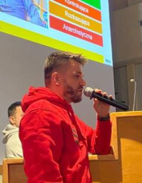
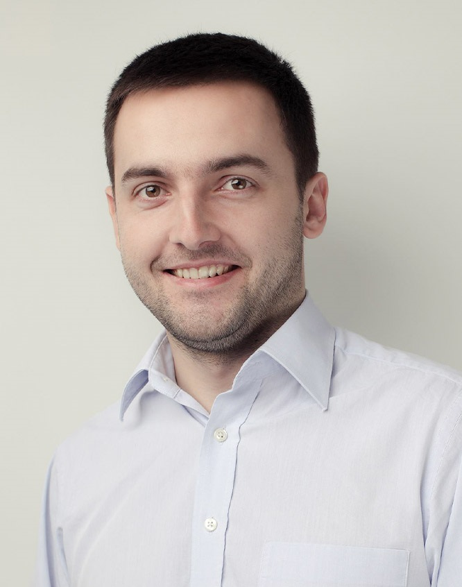

Our Trainers:
Our trainers have deep practical experiance in Product Management, Agile Transformation, Extreme programming, Leadership, Recruiting & OnBoarding and Agile HR. We design each workshop from scratch, aiming at it's unique elements that enable full potential of the people trained, providing them with satisfaction and giving them the tools and support necessary in everyday work.
Do you want to join us as a Trainer/Coach/Mentor?
Contact usBłażej Drobniuch
Agile Coach / Scrum Master www.linkedin.com/in/drobniuch
Agile practitioner, since 2011 associated with the IT industry. Supporting organizations in achieving agility by building it around self-managing teams focused on delivering business value. Błażej gained his experience in small and large companies where he participated in agile transformation, defining new roles, structures and ways of working.
He has a number of original training projects related to the development of competences in building an agile organization. He conducts trainings in the following areas: Product Management, Agile Leadership, Agile Organisation,Agile Culture, Extreme programming, Recruiting & OnBoarding, Agile HR. Speaker at the Motorola Agile Swarming 2019 conference, IT Academic Days conference, lecture for students of AGH University of Science and Technology, MeetUp ALE Krakow, MeetUp NovoTalks; Web Academy webinar. Author of articles on Agile.
Certified LeSS practitioner, Scrum Master, Product Owner, Agile Leader and programmer (CLP, PSM II, PSM I, PSPO II, PSPO I, PAL I, C ++ 03 Expert). A graduate of the School of Trainers at the Wszechnica UJ Krakow. An enthusiast of Turquoise Organizations, Large Scale Scrum (LeSS), Management 3.0, Impact Mapping, and #NoEstimate movement.

Tomasz Morański
HR Business Partner www.linkedin.com/in/tmoranski
His passion is to work with people and new technology. He has been associated with the IT industry since 2015. Supporting organization with Facilitation, Recruiting, Coaching, Management, and Performance Management, Onboarding and Offboarding.
Fascinated by the use of questions in working with people. The training that he conducted focuses on recruitment, Onboarding, Offboarding and talent management inter alia: Agile HR, Meetup ALE, Educational Thursday,
A graduate of the School of the Trainers at Wszechnica UJ Kraków. Certified by Door / Franklin Covey: Motivation 6.0, Top Manager, Helping Client Succeed, Filling Your Pipelines. A graduate of the University of Minnesota by the Coursera: Preparing to Manage Human Resources; Recruiting, Hiring and Onboarding Employees; Managing Employee Performance